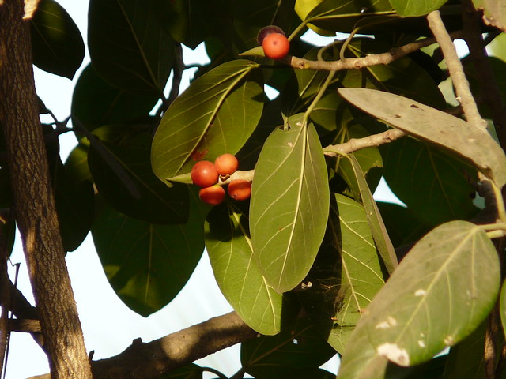

Overview of Vata
Vata – Ficus benghalensis is an Ayurvedic herb known for its various therapeutic properties including wound healing, anti-inflammatory effects, and treatment of excessive micturition and vaginal infections.
Botanical Information
- Botanical Name: Ficus benghalensis Linn
- Family: Moraceae
Regional Names
- Bengali: Vata, Badagach
- Gujarati: Vada
- Hindi: Bada, Baragada
- Kannada: Aal, Allmadra
- Marathi: Vada
- Telugu: Mrii
- English: Banyan Tree
Classification
- Charak Samhita: Mutrasangrahaniya Mahakashaya
- Sushruta Samhita: Nyagrodhadi, Panchvalkal Gana
- Bhavprakash Nighantu: Vatadi Varga
Morphology
External Morphology: 15-20 meter high tree.
Useful Parts: Stem bark, leaves, leaf bud, fruit
Phytoconstituents
- Beta-sitosterol
- D-glucoside
- Leucoanthocyanin
- Tiglic Acid
- Vitamin K
- Stigmasterol
Rasa Panchak
- Rasa: Kashaya (Astringent)
- Guna: Guru (Heavy), Ruksha (Dry)
- Virya: Shita (Cool)
- Vipaka: Katu (Pungent after digestion)
Action
Action: Kaphapittahara (Reduces vitiated Kapha and Pitta doshas)
Therapeutic Indications
- Vranaropana (Wound healing)
- Sothahara (Anti-inflammatory)
- Mutrasangrahaniya (Treats excessive micturition)
- Shukrala (Aphrodisiac)
- Pramehahara (Anti-diabetic)
- Yonirogahara (Useful for treating vaginal infections)
Therapeutic Uses
- Pumsanvana: Leaf-bud with milk used as nasya drops in the right nostril for healthy progeny and male child.
- Bahumutrata: Bark decoction beneficial for excessive micturition in diabetes insipidus.
- Vrana: Latex of Vata's stem rapidly heals wounds or emergency cuts.
Dosage
- Powder: 3-6 gm
- Decoction: 40-80 ml
Formulations
- Panchvalkal Kwath
- Mutrasangrahaniya Kwath
- Nyagrodhadi Kashaya
Adverse Effects
Adverse Effects: Not known
Remedial Measures
Remedial Measures: Not required